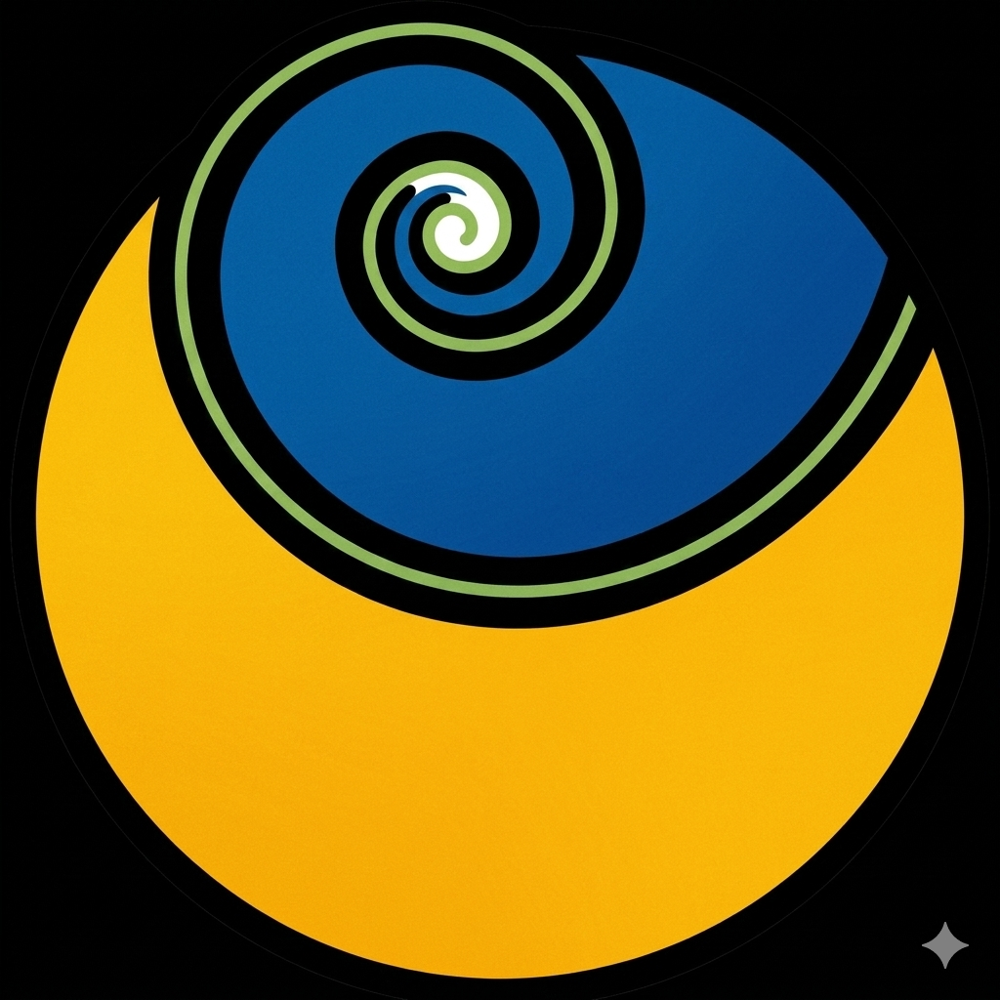

Welcome to your wellness journey
Your Verified Healing Partners
Based on your data, our AI Matching Engine & Experts recommend the following Healing Partners:

Plant-based lifestyle guidance for metabolic and chronic conditions. Explore SHARAN's chatbot, or talk to the AI avatar of one of their healers, Captain Joseph.
Amar Eye Yoga
Auroville, near Pondicherry
Natural Eye Yoga techniques to reduce eye power and get off spectacles — also helps children with Squint and Lazy Eye.
Frequency-based holistic wellness for sleep, stress, anxiety and overall balance — complements lifestyle and natural-healing journeys.
Aria offers lifestyle guidance and does not replace your doctor's advice.